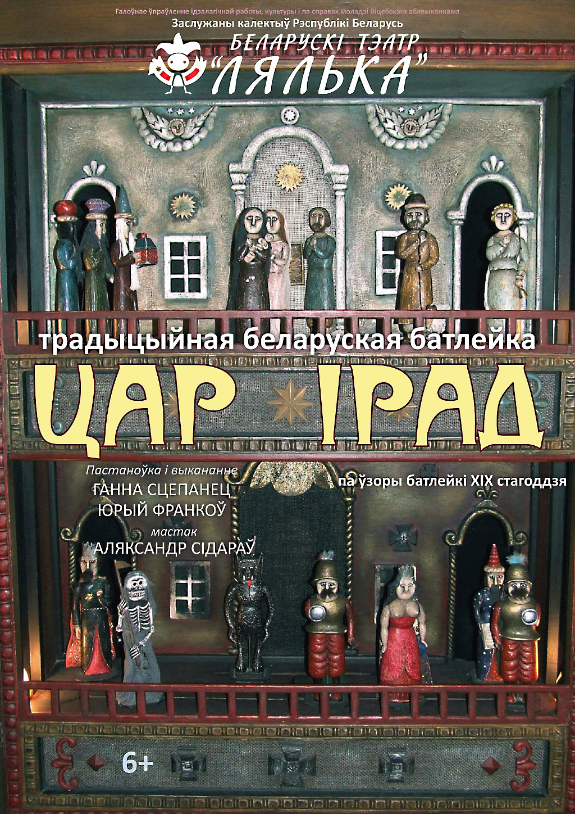

Заслужаны калектыў Рэспублікі Беларусь Беларускі тэатр "Лялька"

Цар Ірад
(традыцыйная беларуская батлейка)
Пастаноўка і выкананне Ганны Сцепанец і Юрася Франкова
Сцэнаграфія і лялькі створаныя Алесем Сідаравым па ўзоры магілёўскай батлейкі ХІХ стагоддзя
Для дзяцей ад 6 год
Запальваюцца свечкі — і музейны экспанат ажывае. Гучаць неўміручыя галасы герояў адвечнай драмы, а ў галасах тых — і замілаванне, і страх, і боль, і нянавісць, і вера ў найвышэйшую справядлівасць.
Тэкст батлейкавага прадстаўлення падаецца паводле запісаў Е.Р.Раманава, зробленых у ваколіцах Віцебска напрыканцы ХІХ стагоддзя. У народнай драме Дабро і Зло жывуць на розных паверхах ды змагаюцца зацята і бескампрамісна. А светлы Анёл са званочкам не стамляецца нагадваць: “Чалавеча бедны! Не правазнасіся!”
Кароткая гістарычная даведка пра тэатр “ЛЯЛЬКА”
Заслужаны калектыў Рэспублікі Беларусь Беларускі тэатр "Лялька" заснаваны ў 1985 годзе пры Беларускім акадэмічным тэатры імя Якуба Коласа як лялечная трупа. Першы спектакль ( «Дзед і журавель» паводле п'есы В. Вольскага) быў адыграны 20 красавіка 1986 года. У 1990 годзе лялечная трупа вылучылася ў самастойны калектыў з асобным будынкам у цэнтры горада - помнікам архітэктуры пачатку ХХ стагоддзя.
У 2000 годзе калектыў Беларускага тэатра «Лялька» атрымаў ганаровае званне «Заслужаны калектыў Рэспублікі Беларусь».
Мастацкім кіраўніком тэатра з дня заснавання з'яўляецца заслужаны дзеяч мастацтваў Рэспублікі Беларусь Віктар Ігнатавіч Клімчук.
За гады творчай дзейнасці тэатр выступаў у многіх краінах свету, такіх як Францыя, Германія, Іран, Турцыя, Югаславія, Балгарыя, Егіпет, Туніс, Фінляндыя, Сербія, Харватыя, Польшча, Расія і іншых. Калектыў мае шэраг прэстыжных узнагарод міжнародных тэатральных фестываляў у Рэспубліцы Беларусь і за яе межамі.
Пастаноўкі “Лялькі” спалучаюць глыбокае асэнсаванне галоўных пытанняў чалавечага жыцця з эстэтычна прывабнай мастацкай формай, а выхаванне душы — з ненавязлівай займальнасцю.
Зараз у рэпертуары тэатра 28 спектакляў для дзяцей і 8 — для дарослага гледача.